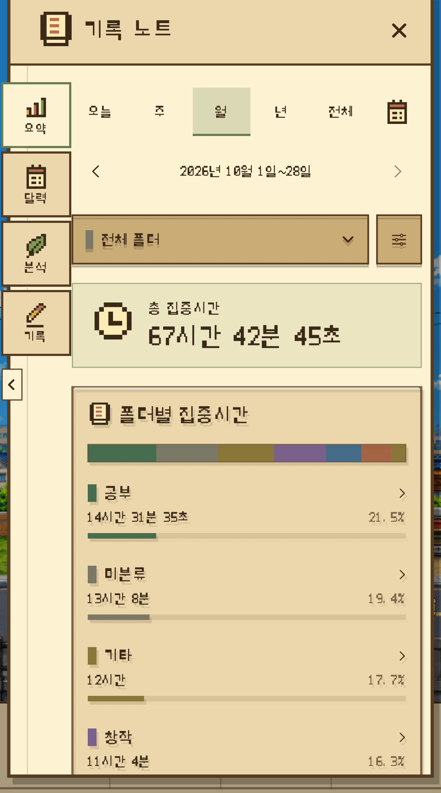
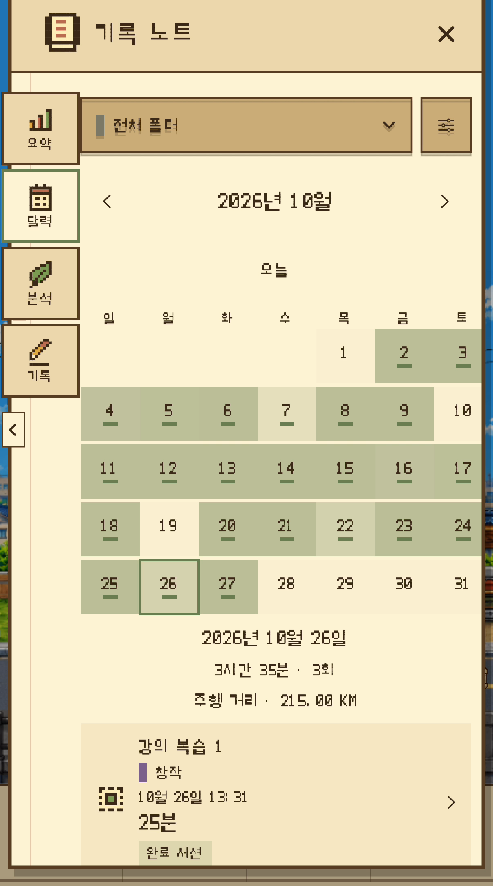
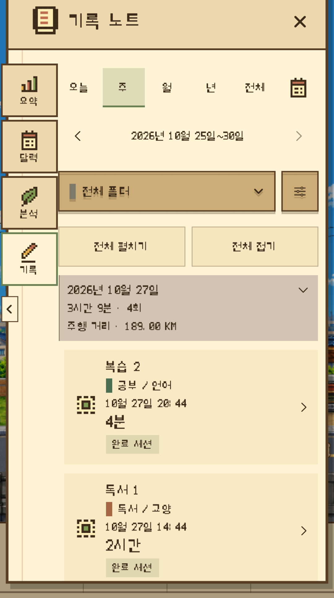
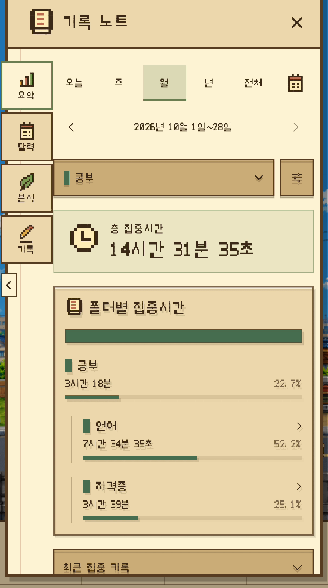
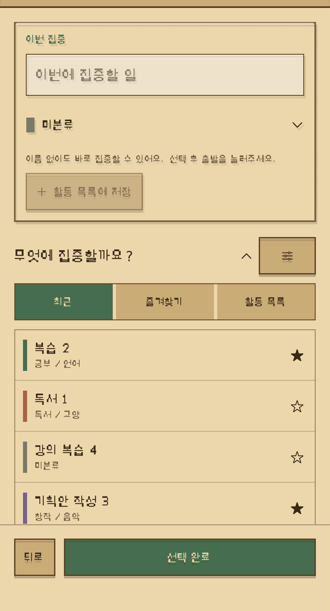
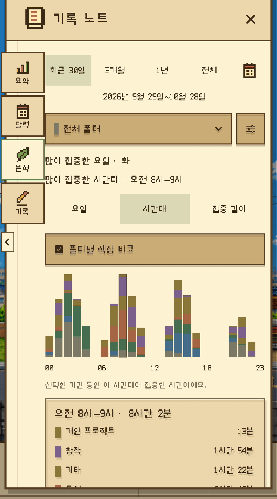
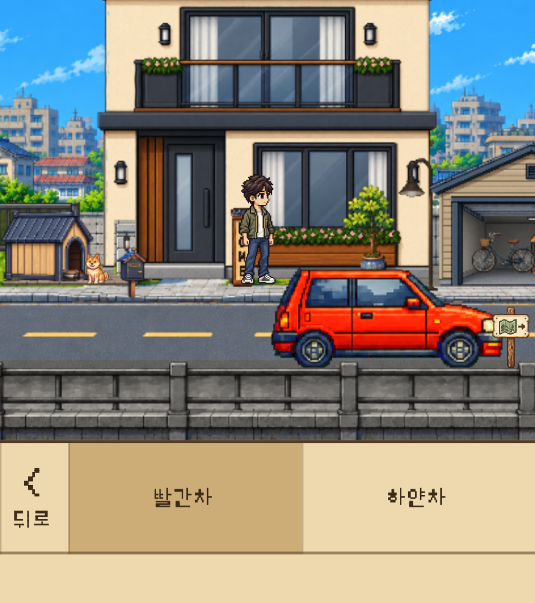
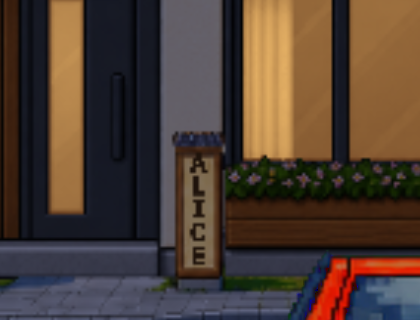

시간 설정 → 출발
10·25·45·60분 프리셋이나 시·분·초 직접 설정을 고릅니다. 활동 이름은 선택사항입니다.
집중·기록·성장·휴식이 이어지는 iPhone 집중 타이머.

Dayroad는 픽셀 드라이브와 기록노트, 자라나는 Home을 하나로 잇는 iPhone 집중 타이머입니다. 집중할 일을 정하고 시간을 쌓으세요. 기록으로 습관을 돌아보고, 나만의 공간을 가꾸고, 카페에서 잠깐 쉬어갑니다.
2026년 10월 23일 출시
iPhone Focus Timer
시작이 어렵거나 다른 앱으로 손이 갈 때. 할 일과 시간을 정하면 자동차는 자동으로 달리고, 사용자는 자신의 공부·독서·작업에 머무릅니다.
10·25·45·60분 프리셋이나 시·분·초 직접 설정을 고릅니다. 활동 이름은 선택사항입니다.

Focus Drive는 자동 주행으로 시작합니다. 타이머를 일시정지·재개하고 남은 시간 표시를 켜거나 끌 수 있습니다.

선택한 앱·카테고리를 차단하는 선택 기능입니다. 스크린 타임 권한이 필요하며 보상 조건은 동일합니다.
웹사이트 차단은 지원하지 않습니다. 잠금 화면의 Live Activity로 남은 시간을 확인하고 완료 알림을 받을 수 있습니다. 기기 지원·권한·알림 설정에 따라 동작이 달라집니다.
Home 1단계에서 우편함을 해금하면 기록노트에 들어갈 수 있습니다. 요약·달력·분석·기록을 오가며 실제 집중시간을 돌아봅니다.

기간별 총 집중시간, 시간 변화와 비교를 확인합니다. 자세히 보기에서 완료율·연속 집중과 누적 집중 배지도 살펴봅니다.

달력에서 날짜를 골라 그날의 집중시간과 세션을 확인합니다. 날짜·기간을 바꾸어 이전 기록도 찾아봅니다.

세션 목록과 상세에서 설정 시간·실제 집중시간·완료/중단을 구분합니다. 기록 저장과 스탬프 지급은 별도의 규칙입니다.
화면의 통계와 활동 이름은 촬영용 샘플 기록입니다. 실제 사용자 성과나 하나의 연속 세션을 나타내지 않습니다.
이름만 적고 시작해도, 저장한 활동을 골라도 됩니다. 활동과 폴더로 시간을 정리하고 분석에서 자신의 집중 습관을 살펴봅니다.

폴더는 최대 2단계입니다. 상위 폴더는 하위 폴더의 시간을 합산하며, 폴더별·활동별 집중시간을 확인할 수 있습니다.

활동 이름을 저장·재사용하고 최근·즐겨찾기에서 고릅니다. 기록의 이름과 분류를 수정하고 폴더로 필터링할 수 있습니다.

기간과 폴더를 골라 요일·시간대·한 번의 집중 길이를 분석합니다. 색상으로 폴더를 비교하고 그래프의 구간도 살펴봅니다.
기록의 이름·분류를 고치는 것과 실제 집중시간·스탬프 보상을 바꾸는 것은 다릅니다. 화면에는 촬영용 샘플 기록을 사용했습니다.
실제 집중시간이 누적 25분이 될 때마다 스탬프 1개. 남은 시간은 다음 집중으로 이월되고, 필요한 수를 모아 Home에서 직접 사용합니다.

완료하거나 중단한 세션의 실제 집중시간이 기록됩니다. 화면은 실제 25분 완료·스탬프 획득 장면입니다.

다음 단계에 필요한 스탬프를 모아 직접 선택해 해금합니다. 성장에 필요한 수는 단계마다 다릅니다.

집중 기록과 자라나는 공간이 다음 집중을 시작할 작은 목표가 되도록 설계했습니다.
집중 → 기록 → 스탬프·직접 해금 → Home 성장·꾸미기 → 다음 집중
각 장면은 별도로 촬영한 화면 예시이며, 하나의 연속된 집중 기록이 아닙니다.
작은 집에서 달라지는 마당과 생활 풍경까지. Home은 35단계에 걸쳐 변화합니다. 우편함은 1단계, 자동차 꾸미기는 2단계, 아바타는 3단계, 명패는 5단계에 열립니다.


눈에 보이는 기록과 자라나는 공간이 다음 집중을 시작할 작은 목표가 되도록 설계했습니다.
일본 Home 35단계를 완료하면 해당 지역의 잔여 스탬프와 이월 시간이 0이 되고 이후 스탬프 지급은 끝납니다. 실제 집중시간·세션 기록·배지는 계속 쌓입니다.
Home의 성장에 따라 꾸미기 메뉴가 열립니다. 새로운 기능을 해금한 뒤, 기존 하단 메뉴에서 내 취향을 골라 반영합니다.
아바타의 성별·피부·헤어·의상을 선택합니다. 해금된 꾸미기로 풍경 속의 나를 표현합니다.

빨간 자동차와 흰 자동차를 선택할 수 있습니다. Home과 드라이브에 선택한 차량이 반영됩니다.

나만의 이름을 입력해 집 앞의 명패에 적용합니다. 해금 전에는 명패 메뉴가 표시되지 않습니다.
메뉴의 접근은 실제로 해금한 Home 단계에 따릅니다. 스탬프를 보유하기만 하면 자동으로 열리는 구조가 아닙니다.
집중은 자동 주행 중심으로 시작합니다. 별도의 주행 설정에서 자동·직접 조작, 속도, Top·Side View를 선택할 수 있습니다. 시간대는 자동 또는 직접 설정하고, 날씨는 맑음·비를 수동으로 고릅니다.


음악·환경음·효과음을 조절하고, 카페에서 쉬거나 다시 출발합니다. Home의 아바타와 강아지 생활 연출, 변화하는 주변 풍경이 집중과 휴식의 사이를 채웁니다.
쌓인 시간과 나만의 공간을 오래 이어갈 수 있도록. 저장과 백업, 언어와 여행지의 기본 정보를 정리했습니다.
기기 저장과 개인 iCloud 동기화, JSON 파일 내보내기·복원을 지원합니다. 동기화는 Apple 계정·iCloud·네트워크 상태에 따라 달라집니다. 중요한 기록은 별도 백업도 보관하세요.
Home의 여행 지도책에서 현재 일본 지역을 확인합니다. 현재 제공되는 Focus Drive는 일본 풍경이며, 다른 지역의 표시가 이용 가능한 콘텐츠를 의미하지는 않습니다. 추가 지역의 제공·구매 범위는 별도 안내를 따릅니다.
앱 UI를 한국어·일본어·영어로 제공합니다. 지원 기기와 호환 정보는 App Store에서 확인하세요.
Free Drive는 시간 제한 없이 계속 무료입니다. 집중 보상은 지급되지 않습니다.
일본 풍경을 배경으로 한 Focus Drive를 누적 75분까지 무료로 체험할 수 있습니다. 이후에는 Focus Drive Pass를 한 번 구매해 계속 이용합니다. 구독·자동 갱신·체험 종료 후 자동 결제는 없습니다.
패스는 현재 일본 배경 Focus Drive용입니다. 추가 지역은 별도 구매로 제공될 수 있습니다. 앱에서 기존 구매의 복원을 지원합니다.
공식 App Store 표시 확인: KR ₩9,900 · JP ¥1,000 · US $6.99 (2026-10-29). 실제 결제 금액은 구매 화면의 현지 표시를 확인해 주세요.
지원 기기와 자세한 호환 정보는 App Store에서 확인해 주세요.
Dayroad 개발자
미디어 사용 안내는 패키지의 MEDIA-USE.txt를 확인해 주세요.